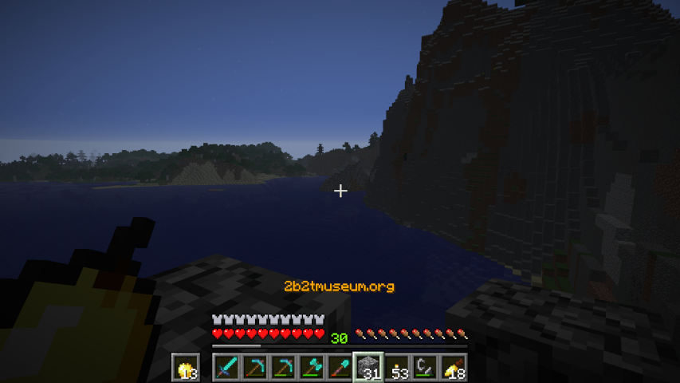

~ The original survival 2b2t world-download exhibit server ~
Minecraft 1.21.x

EXHIBIT SNAPSHOT: Survival
=== ABOUT THE SERVER ===
2b2tmuseum starts back in 2017 under ownership of players Offtopia and jddinger, and, in the background, developed and maintained by 2F4U.
It was the first public 2b2t world-download archive server to exist. The original Museum failed in 2019 due to Offtopia and jddinger giving too many
volunteers and other random players administrator access to the server and its data, resulting in data privacy issues.
2b2tmuseum restarts in late 2025 under sole ownership of 2F4U, and hosted on a close friend's server hardware. 2F4U develops and maintains the server
and manages the world downloads alone, without help, to prevent what happened in 2019. Since restarting the server, 2F4U has put countless hours into molding
the server into what the original vision for the server was: An anarchy survival-archive hybrid server, featuring a fully playable world, with historic
structures stitched throughout the world at their real-life coordinates.
2F4U hopes to capture the pre-2016 survival 2b2t experience, when Minecraft was much simpler, travel was much slower, and when the world was truly unmoderated.
2F4U also hopes to properly archive the historic bits and pieces from 2b2t's world for all to view. Structures built by players who are long forgotten, and no longer play.
The IP to connect is 2b2tmuseum.org (port 25565)
Run /help for a list of commands and their descriptions.